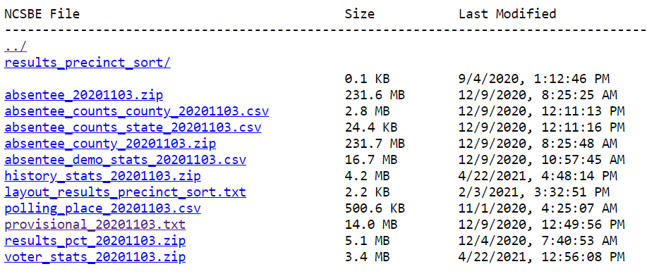
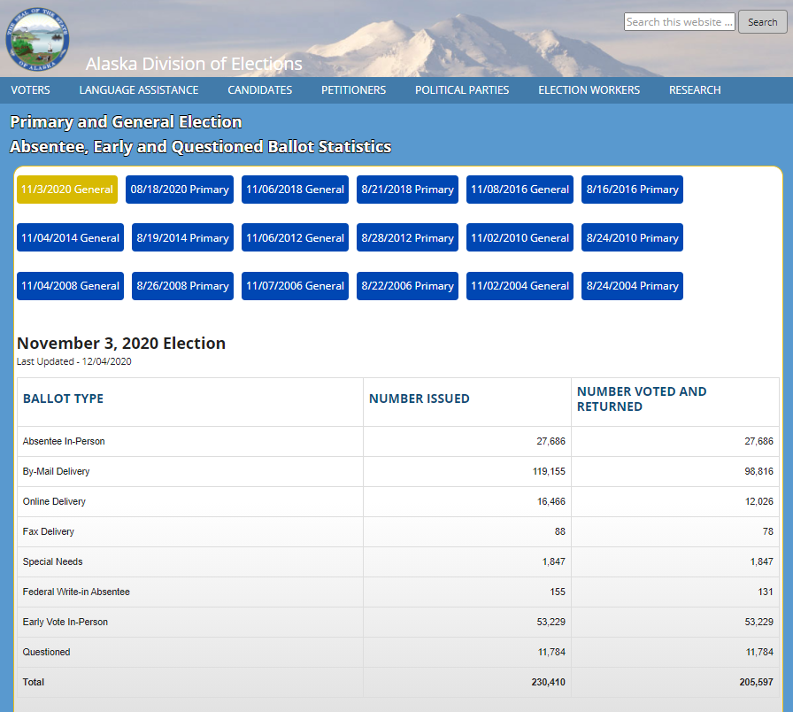

import urllib.request
url = 'https://s3.amazonaws.com/dl.ncsbe.gov/ENRS/2020_11_03/absentee_counts_county_20201103.csv'
urllib.request.urlretrieve(url, 'nc.csv')Like many Americans, last fall I was captivated by Professor Michael McDonald’s US Elections Project and, in particular, his daily reporting of early vote totals across all 50 states. Not only did this reporting provide fuel for anxious speculation and satiate an innate desire for reading the tea leaves, but it was also a quite a feat in data management.
In many discussions of modern data management, the extract-load-transform (ELT) process is offered as a solution to data silos. However, these tools largely focus on abstracting away the different REST APIs of common sources (e.g. Salesforce, Google Analytics, Facebook Ads) and destinations (e.g. BigQuery, Redshift, Snowflake). At the same time, many data science resources introduce static web page scraping as a tool in one’s toolkit but discuss less scraping websites rendered with client side JavaScript (as quite a bit of the internet is) or navigating arbitrary applications with browser automation.
For more “creative”, persay, sources, we need to build our own solutions. And this is particularly true when we’re attempting to access, standardize, and analyze 50 separate data sets published at different cadences, provided with different levels of granularity, partitioned along different dimensions, controlled by different levels of access and permission, and embedded in systems with vastly different underlying architecture. (Oh, and in Dr. McDonald’s case, with a good number of Twitter users starting to tweet at you if you haven’t refreshed your website by 8:02AM!)
To give an example of some of the diverse data sources used in the Elections Project:
- IL, WI, and NC provide direct
csvdownloads with predictable URLs which contain all data to-date - WV and AK display data in static tables rendere by server-side PHP
- VA shows its data in a dashboard rendered by client-side JavaScript (which may superficially sound like the last bullet but has different implications for the types of scraping tools that could lend a hand1)
- GA and TX offer downloadable data which requires navigating through a Java serverlet UI2 to access
- RI publishes data in a PowerBI dashboard
- AL, AZ, MI, IA, and PA were among those that didn’t publish data publicly and required Professor McDonald to directly contact their Secretary of State offices
The disparities in these data publishing formats and access patterns seemed like an interesting opportunity to compare different tools for data extraction. This posts starts out with a few trivial examples of using requests for HTTP requests and BeautifulSoup for static web scraping in order to understand the strengths and limitations for each tool and the unmet needs that browser automation helps address. We’ll then switch over to Playwright (with a touch of pytesseract) for a sampling of the types of challenges that browser automation can tackle.
- NC: Direct Download with
urllib.request - WI: Direct Download with a Dynamic URL
- AK: Web scraping with
BeautifulSoup - VA: Web scraping with
Playwright - TX: Browser automation with
Playwright - RI: Arbitrary UIs with OCR
NC: Direct Download

North Carolina provides one of the simplest paths to accessing paths to downloading its data. Data files live in a public S3 bucket with static file names based on the election date. Granular voter-level data can be downloaded easily with the urllib.request library.
WI: Direct Download with Dynamic URL

Wisconsin has similarly accessible data files available for download. However, when they update files during an election cycle, each new file is named by publishing date. So, unlike North Carolina, the URL of interest varies and it’s not altogether obvious what the most current one is.
We can still use requests to download this data, but it requires more caution in constructing the URL. The retrieve_date() function requires an ISO 8601 date to be passed in and attempts to construct a URL from it. Our GET request returns a status code of 500 if no such path exists, at which point we can throw an exception. Some calling program could decrement the date and try again.
import requests
import datetime
def retrieve_date(date):
# format dates as needed
dt = datetime.datetime.strptime(date, '%Y-%m-%d')
yyyy_mm = dt.strftime('%Y-%m')
mm_d_yyyy = dt.strftime('%m-%#d-%Y')
# download csv
url = f'https://elections.wi.gov/sites/elections.wi.gov/files/{yyyy_mm}/AbsenteeCounts_County%20{mm_d_yyyy}.csv'
req = requests.get(url)
if req.status_code == 500:
raise Exception('Resource not found')
content = req.content
# write to file
csv = open('wi.csv', 'wb')
csv.write(content)
csv.close()AK: Web Scraping with BeautifulSoup

Instead of provided a direct download, Arkansas publishes data to its election website by rendering a static HTML table with server-side PHP. As with before, we can retrieve this content with requests, but now we need to parse the output ourselves. Specifically, we want to iterate over table rows such as this:
<tr>
<td>Online Delivery</td>
<td>16,446</td>
<td>12,026</td>
</tr>For this, we can use BeautifulSoup to iterate through the table and save the results to a CSV file with pandas.
from bs4 import BeautifulSoup
import requests
import datetime
import pandas as pd
url = "https://www.elections.alaska.gov/doc/info/statstable.php"
html_content = requests.get(url).text
soup = BeautifulSoup(html_content, "lxml")
table = soup.find("table", attrs = {"class":"lctbl"})
data = []
rows = table.tbody.find_all("tr")
# iterate over rows excluding first (header) and last (total)
for r in range(1, len(rows) - 1):
row = rows[r]
vals = [d.get_text() for d in row.find_all("td")]
# convert count columns to numeric
vals[1] = int(vals[1].replace(',',''))
vals[2] = int(vals[2].replace(',',''))
data.append(vals)
# save resulting data
df = pd.DataFrame(data, columns = ['channel','n_issued','n_returned'])
df['dt_updated'] = dt_fmt
df.to_csv('ak.csv', index = False)VA: Web Scraping with Playwright

Virginia seems superficially similar to Arkansas insomuch as data is provided in an in-browser display. However, since this display is constructed with browser-side JavaScript, it won’t appear in the content that results from a call to requests.get().
Many different approaches exist to force JavaScript to update the DOM before accessing the source3. Arguably Microsoft’s Playwright is overly complicated for this situation, but I use it for this example since it is a flexible tool for browser automation, and the next three examples help demonstrate the variety of features it offers.
The following script navigates to Virginia’s website with a headless Firefox browser and then extracts vote counts stored as attributes in the bar chart tooltip. Each bar is create with script like this:
<rect x="95.333" y="101" width="7.333" height="104"
data-toggle="popever" data-placement="top" title
data-content="In-Person: 140<br />Mail: 94<br />Total: 234"
data-original-title="Sep 30">
</rect>As before, results are then coerced into a pandas dataframe and written to a csv.
The following script defines a retrieve_county() function to parse out this information for a single county.
from playwright.sync_api import sync_playwright
import datetime
import re
import pandas as pd
def retrieve_county(county, page):
# navigate to county-specific page
county_url = county.lower().replace(' ','-')
page.goto(f'https://www.vpap.org/elections/early-voting/year-2020/{county_url}-va')
county_records = []
for n in range(1,100):
selector = f'#timeline g.popovers rect:nth-of-type({n})'
try:
date = page.get_attribute(selector, 'data-original-title')
vals = page.get_attribute(selector, 'data-content')
except:
break
# process data into tabular structure
vals_method = re.search('In-Person: (\d+)<br />Mail: (\d+)<br />Total: (\d+)', vals.replace(',',''))
date_parse = datetime.datetime.strptime(date + ' 2020', '%b %d %Y').strftime('%Y-%m-%d')
county_records.append([county, date_parse, 'In-Person', vals_method.group(1)])
county_records.append([county, date_parse, 'Mail', vals_method.group(2)])
return county_recordsAs a low fidelity but transparent example of it in operation, I show it looping over a few counties. In reality, we’d add more exception handling or save interim results separately so failures in any one county did not take down the whole process.
with sync_playwright() as p:
# set up
browser = p.firefox.launch()
context = browser.new_context(accept_downloads = True)
page = context.new_page()
# iterate over counties
county = ['Accomack County', 'Albemarle County', 'Alexandria City']
records = []
for c in county:
records += retrieve_county(c, page)
# save resulting data
df = pd.DataFrame(records, columns = ['county', 'date', 'channel', 'n'])
df.to_csv('va.csv', index = False)
# cleanup
page.close()
context.close()
browser.close()This creates the following data structure:
# A tibble: 6 x 4
county date channel n
<chr> <date> <chr> <dbl>
1 Accomack County 2020-09-17 In-Person 0
2 Accomack County 2020-09-17 Mail 0
3 Accomack County 2020-09-18 In-Person 212
4 Accomack County 2020-09-18 Mail 0
5 Accomack County 2020-09-19 In-Person 0
6 Accomack County 2020-09-19 Mail 0TX: Browser Automation with Playwright

Next up, we come to Texas. Texas, somewhat paradoxically, generously provides rich data (by day, by voting method, by county, and even by person) and yet does so in a way that is particularly tedious to access. Navigating to the data download requires selecting an election and then a voting date out of a UI before clicking a button in a Java serverlet4 that triggers the creation and downloading of a report as shown above.
This is where Playwright really shines. As with Virginia, it loads the Texas’ data in a headless5 browser. But beyond just opening a browser, Playwright can interact with it in the same way as a user: selecting options from menus, clicking buttons, and more.
In the retrieve_date() function below, I tell my browser exactly what I want it to do: go to the website, pick an election, click submit, pick a date, click submit, and then finally click a button to download data.
from playwright.sync_api import sync_playwright
import datetime
def retrieve_date(date, page):
# navigate to date-specific page
target_date = datetime.datetime.strptime(date, '%Y%m%d')
target_date_str = target_date.strftime('%Y-%m-%d 00:00:00.0')
target_file = 'tx-' + target_date.strftime('%Y%m%d') + '.csv'
# pick election
page.goto('https://earlyvoting.texas-election.com/Elections/getElectionDetails.do')
page.select_option('#idElection', label = "2020 NOVEMBER 3RD GENERAL ELECTION")
page.click('#electionsInfoForm button')
page.wait_for_selector('#selectedDate')
# pick day
page.select_option('#selectedDate', value = target_date_str)
page.click('#electionsInfoForm button:nth-child(2)')
page.wait_for_selector('"Generate Statewide Report"')
# download report
with page.expect_download() as download_info:
page.click('"Generate Statewide Report"')
download = download_info.value
download.save_as(target_file)This function could then be called for one or more dates of interest:
with sync_playwright() as p:
browser = p.firefox.launch()
context = browser.new_context(accept_downloads = True)
page = context.new_page()
dates = ['20201020','20201021','20201022']
for d in dates:
retrieve_date(d, page)
# cleanup
page.close()
context.close()
browser.close()RI: Arbitrary UIs with OCR

The ability to navigate around a UI starts to blend the capabilities of Playwright’s browser automation with the more full-fledged concept of robotic process automation (RPA). RPA tools can similarly navigate arbitrary non-browser-based UIs to perform manual tasks with great speed. Abritrary UIs lack many of the features we’ve been using so far such as Xpaths and CSS IDs and classes to tell our tools where to do what. Instead, their often have built-in optical character recognition (OCR) to recognize buttons or input boxes “on sight”.
Playwright doesn’t quite have these capabilities built in natively, but it does offer users the ability to screenshot their browser. This allows us to pass the screenshot to pytesseract for OCR in a similar manner.
This techniques comes in handy for Rhode Island whose data is hosted in an embedded PowerBI app. The following script navigates to and screenshots the app, converts the resulting image to text, extracts the total vote count, and writes the results to PDFs.
import cv2
import pytesseract
from playwright.sync_api import sync_playwright
import time
import re
import pandas as pd
pytesseract.pytesseract.tesseract_cmd = 'C:\\Program Files\\Tesseract-OCR\\tesseract.exe'
with sync_playwright() as p:
# set up
browser = p.firefox.launch()
context = browser.new_context(accept_downloads = True)
page = context.new_page()
page.goto('https://app.powerbigov.us/view?r=eyJrIjoiMGEwN2E0MzUtOTA0OC00ZDA3LThjMTItZDZhYTBjYjU5ZjhjIiwidCI6IjJkMGYxZGI2LWRkNTktNDc3Mi04NjVmLTE5MTQxNzVkMDdjMiJ9')
page.wait_for_load_state(state = 'networkidle')
time.sleep(30)
page.screenshot(path = 'ri.png')
# cleanup
page.close()
context.close()
browser.close()
# extract text
img = cv2.imread('ri.png')
text = pytesseract.image_to_string(img)
n_tot = re.search('Turnout\n\n(\d+)', text.replace(',','')).group(1)
n_mail = re.search('Mail Ballots Received by BOE\n\n(\d+)', text.replace(',','')).group(1)
# write output
df = pd.DataFrame([[n_tot, n_mail]], columns = ['n_tot','n_mail'])
df.to_csv('ri.csv', index = False)This creates the following data structure:
# A tibble: 1 x 2
n_tot n_mail
<dbl> <dbl>
1 305724 156178What Next?
Simply accessing data is only the first in many steps towards unifying and analyzing it. The full scope of the US Elections Project requires far more numerous and challenging steps including:
- Understanding the exact schema and variables of each data set
- Understanding when historical data may be modified or corrected and adjusting accordingly
- Accounting for sudden changes to reporting formats, cadences, or locations
- Obtaining data from states where the
robots.txtprevents scraping (I’m looking at you, IL) - Building relationships with Secretary of States’ offices where data is not publicly available
Regardless, surveying what different states choose to publish and how they choose to share it provides an interesting opportunity to think about data access, usability, and available technologies for data retrieval.
Footnotes
Traditional tools like python’s
BeautifulSoupor R’srvestdon’t play nicely with dynamic websites where client-side JavaScript is modifying the DOM↩︎Or so this StackExchange would suggest based on the
.doextension↩︎Selenium and PhantomJS are popular related tools↩︎
The significance of this is that this button is not like clicking a link with a specific web URL.↩︎
Headless basically just means the browser doesn’t physically open on our computer so we don’t see it. Time and compute resources aren’t wasted on “painting” the browser to show us what is happening. However, if you enjoy watching your computer work in a “Look Mom, no hands!” sort of way, you can use the
headless = Falseoption when launching the browser.↩︎